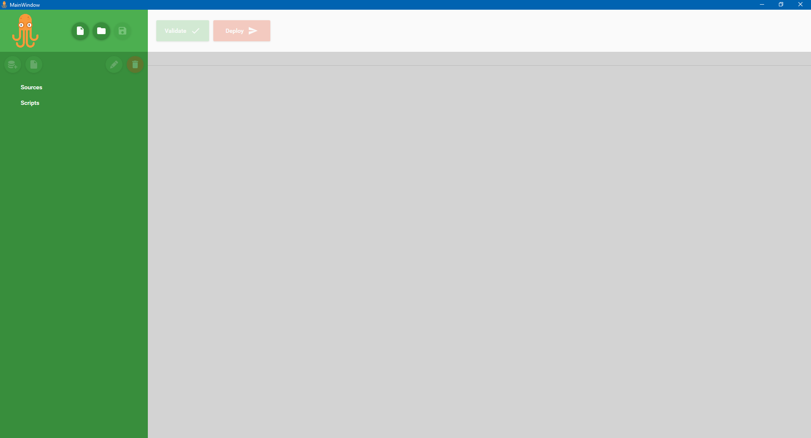

About
The best sql server multi database deployment tool.
TakoDeploy
I got tired of manually deploying the same script to multiple databases, and checking if everything was ok. After some time, this process lead to some issues, for example, skipping one database, or forgetting to check the executed script's errors.

Simplicity
Add all the databases you need
Databases can be added via connection strings, choosing the catalog directly or selecting other types of database listing.

Add and edit your scripts
Add your script from existing file, or just add an empty file, then you can edit it with our support for Avalon Text editor.
Hit Deploy, and grab a cup of coffee!
After adding the databases and scripts, starts the deployment of all scripts to all databases.
Features
TODO: list features